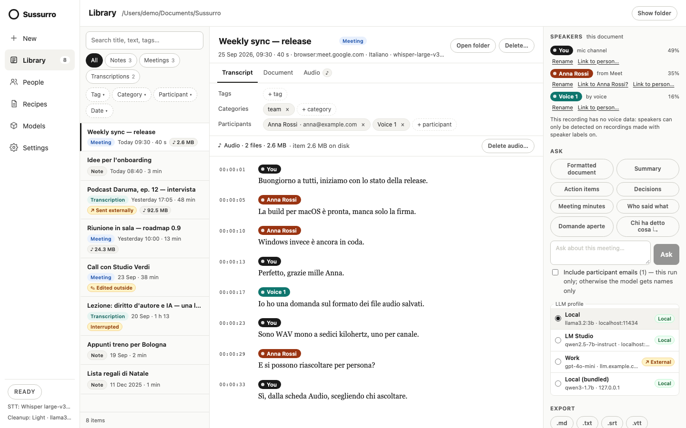

Your voice, written.
On your machine.
A speech-to-text workbench for macOS, Windows and Linux: hotkey dictation into any app, long notes, transcriptions of files and links, and meetings with speaker labels — transcribed on your computer and saved as markdown in your own folder.
Dictate with CtrlShiftSpace · ⌘⇧Space on Mac · free & open source (AGPL-3.0)

Your voice is yours. It never touches a server.
Cloud tools stream your microphone to someone else's computer. Sussurro records, transcribes and cleans up on your device — with local speech models and, if you want cleanup, a local LLM. No account. No telemetry. It works on a plane.
- Models are downloaded once, when you choose them, and verified against their published SHA-256.
- Links you transcribe are downloaded to a temporary file (video sites through yt-dlp), deleted when the transcription ends.
- External LLMs get text, never audio — and only when you say so: recipes and questions ask before every run, cleanup needs an opt-in per profile, and the Library marks what was sent.
- Updates are checked only when you click Check for updates. Recording other people? Sussurro reminds you that they may need to be told.
Any source in. Markdown out.
Every source goes through the same local pipeline and ends up as an item in your Library — a folder of plain files you can open with any editor.
Capture
Your microphone, an audio file, a link, a browser meeting through the extension, or your computer's sound plus your mic.
Transcribe
whisper.cpp on the GPU (Metal, Vulkan), NVIDIA Parakeet on the CPU, or the optional Qwen3-ASR — all on your computer.
Clean up
A local LLM drops fillers and fixes punctuation, segment by segment. Four levels, from None to High.
Keep
A note, meeting or transcription in
Documents/Sussurro— plus subtitles, recipe documents and audio when you ask.
Press. Speak. Release. Done.
Hold the shortcut in any app and talk; let go and the cleaned-up text is pasted where your cursor is. The window can stay closed — Sussurro lives in the tray.
- Push-to-talk, or tap to start and tap to stop
- Spoken commands: “new line”, “a capo”, “new bullet”, “scratch that”
- Personal dictionary, snippets and a tone per app
- Translate as you speak, even with cleanup off
- Dictations stay in their own searchable history
A tour in six screens.
Everything below is the app as it ships, with sample data. The manual walks through each screen.
-

One screen for every sourceMicrophone, File, Link and System audio + mic share the same options: language, cleanup level, tags, category and whether to keep the audio. More -

Recipes write documentsFormatted document turns a transcript into a tl;dr, headings and tables, saved as document.mdnext to it. Summary, action items, decisions and minutes too. More -

External only when you say soLocal profiles run straight away. An external one asks before every run and shows exactly what goes where; Cancel sends nothing. More -

Replay one speaker at a timeWhen you keep the audio, play the whole recording or only one person's lines back to back, with the transcript lit word by word. More -

Meetings in the browserThe extension for Chrome, Edge, Brave and Firefox captures Google Meet, Microsoft Teams and Zoom on the web. You are “You”; on Meet the others get their names, elsewhere Voice 1, Voice 2… The app does the transcribing. More -

Calls from desktop appsZoom, Teams or anything that plays sound: your mic and the computer's sound become two channels of one meeting — built-in capture or a virtual device. More
More than transcription.
Because Sussurro runs the models itself, everything happens where your files already are.
-
Hotkey dictation
Speak in any app, get clean text at your cursor. Four cleanup levels, spoken formatting commands, translation.
-
Notes from the mic
Long sessions transcribed while you talk. Stop, and a note is in your Library — or a meeting, with “Meeting in the room”.
-
Files and links
wav, mp3, m4a, aac, flac, ogg — or a link: direct media, or YouTube, Vimeo, SoundCloud and more through yt-dlp.
-
Browser meetings
An extension for Chrome, Edge, Brave and Firefox records Meet, Teams and Zoom on the web, with a live side panel.
-
System audio + mic
Desktop calls as two channels: built-in capture on macOS 14.2+, Windows and Linux, or BlackHole, VB-Cable and friends.
-
Speaker labels
You on your mic, names from Google Meet, Voice 1, Voice 2… otherwise. Rename, move a line, link a voice to People.
-
A markdown archive
One folder per item with YAML frontmatter, in
Documents/Sussurroor your Obsidian vault. Edits made elsewhere win. -
Search and filters
Full-text search over titles, transcripts, tags and people; filter by type, tag, category, participant and date.
-
Recipes and Ask
Formatted document, summary, action items, decisions, minutes, who said what — or ask the transcript a question.
-
Your LLM, your call
Ollama, any OpenAI-compatible server, or the bundled Qwen3 1.7B with nothing to install. External servers need your consent.
-
Subtitles and exports
.srtand.vttfor meetings and transcriptions, plus.md,.txtand copy as text. -
Audio, only if you want it
WAV is saved only when you ask. Then: per-speaker replay, word highlighting, and a map of who sounds like whom.
The private one is also the capable one.
| Sussurro | Typical cloud transcription | |
|---|---|---|
| Where your audio goes | Nowhere — transcribed on your computer | Uploaded to a server |
| Works offline | Yes, once the models are downloaded | No |
| Account required | None | Sign-up |
| Price | Free & open source | Subscription |
| Where transcripts live | Markdown files in your folder | In the vendor's app |
| Meetings with speaker labels | Yes, locally | In the vendor's cloud |
| You control the model | Yes — swap it out | No |
Paint the eye. Start talking.
Free, open source and entirely yours. Installers are on the GitHub releases page.
-
macOS
Apple Silicon (M1 or later) · macOS 11 or later ·.dmgNot notarized yet: the first time, right-click the app → Open (or System Settings → Privacy & Security → Open Anyway). If a bundled engine — Qwen3-ASR or the bundled model — won't start, run
Download for macOSxattr -cr /Applications/sussurro.apponce. -
Windows
x64 ·.exeinstaller or.msiNot code-signed yet: if SmartScreen stops the installer, click More info → Run anyway. Allow desktop apps to use the microphone in the privacy settings.
Download for Windows -
Linux
x64 ·.AppImage,.debor.rpm· glibc 2.38+ (Ubuntu 24.04 or newer)Pasting needs a clipboard helper —
Download for Linuxwl-clipboardon Wayland,xcliporxselon X11 — and on Wayland the desktop's keyboard permission, orwtype/ydotool.
Browser extension. The same release page has sussurro-extension-chrome-…zip (Chrome, Edge, Brave) and sussurro-extension-firefox-…zip; it is not in the browser stores yet. Install and pair it.
Cleanup is optional. Without it you get exactly what you said. With it, use Ollama, LM Studio, a llama.cpp server or any OpenAI-compatible /v1 server — or the bundled model, with nothing to install. LLM profiles.
Updates are signed and installed from Settings → About → Check for updates, whether or not the installer itself is signed. Prefer to build it yourself? See docs/compile.
-
The manual
Install and first run, dictation, notes, links, the archive, recipes, meetings, system audio, subtitles, privacy, the local API and troubleshooting — one page, with screenshots.
Read the manual → -
The blog
Guides and deep-dives: choosing a model, how cleanup avoids hallucinations, Linux injection, Gatekeeper, where your data lives.
Browse the blog →